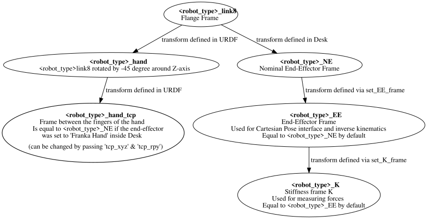

franka_bringup
Installation
Please refer to the README.md
Package Overview
This package contains the launch files for the examples as well as the basic franka.launch.py launch file, that
can be used to start the robot without any controllers.
When you start the robot with:
ros2 launch franka_bringup franka.launch.py robot_type:=fr3 robot_ip:=<fci-ip>
There is no controller running apart from the joint_state_broadcaster. However, a connection with the robot is still
established and the current robot pose is visualized in RViz. In this mode the robot can be guided when the user stop
button is pressed. However, once a controller that uses the effort_command_interface is started, the robot will be
using the torque interface from libfranka. For example it is possible to launch the
gravity_compensation_example_controller by running:
ros2 control load_controller --set-state active gravity_compensation_example_controller
This is the equivalent of running the gravity_compensation_example_controller example mentioned in
Gravity Compensation.
When the controller is stopped with:
ros2 control set_controller_state gravity_compensation_example_controller inactive
the robot will stop the torque control and will only send its current state over the FCI.
You can now choose to start the same controller again with:
ros2 control set_controller_state gravity_compensation_example_controller active
or load and start a different one:
ros2 control load_controller --set-state active joint_impedance_example_controller
Namespace enabled launch files
To demonstrate how to launch the robot within a specified namespace, we provide an example launch file located at
franka_bringup/launch/example.launch.py.
By default example.launch.py file is configured to read essential robot configuration details from a YAML file, franka.ns-config.yaml,
located in the franka_bringup/launch/ directory. You may provide a different YAML file by specifying the path to it in the command line.
franka.ns-config.yaml file specifies critical parameters, including:
The path to the robot’s URDF file.
The namespace to be used for the robot instance.
Additional configuration details specific to the robot instance.
example.launch.py “includes” franka.ns-launch.py which defines the core nodes typically required for robot operation..
The franka.ns-launch.py file, in turn, relies on ns-controllers.yaml to configure the ros2_controller framework.
This configuration ensures that controllers are loaded in a namespace-agnostic manner, supporting consistent behavior across multiple namespaces.
The ns-controllers.yaml file is designed to accommodate zero or more namespaces, provided all namespaces share the same node configuration parameters.
Each of the configuration and launch files (franka.ns-config.yaml, example.launch.py, franka.ns-launch.py, and ns-controllers.yaml) contains detailed inline documentation to guide users through their structure and usage. Further information about namespaces in ROS 2 can be found in the ROS 2 documentation.
To execute any of the example controllers defined in ns-controllers.yaml, you can use the example.launch.py launch file and specify the desired controller name as a command-line argument.
First - modify franka.ns-config.yaml as appropriate for your setup.
Then, for example, to run the move_to_start_example_controller, use the following command:
ros2 launch franka_bringup example.launch.py controller_names:=move_to_start_example_controller
FR3 Duo
The franka_bringup package supports launching a FR3 Duo setup using the fr3_duo.launch.py
launch file with the fr3_duo.config.yaml configuration file.
Important
The FR3 Duo setup currently only supports the torque (effort) command interface. Position, velocity, and Cartesian pose/velocity interfaces are not supported for dual-arm configurations.
Configuration
The dual-arm configuration is defined in franka_bringup/config/fr3_duo.config.yaml. The key parameters are:
robot_types: Types of the robot arms as a string list (e.g.,"['fr3','fr3']")arm_prefixes: Unique prefixes for each arm (e.g.,"['right','left']")robot_ips: IP addresses of the robots as a string list (e.g.,"['172.16.0.3','172.16.0.5']")check_selfcollision: Enables the self_collision_node (e.g.,"true")
Note
All three arrays (robot_types, robot_ips, arm_prefixes) must have the same length,
and arm_prefixes must contain unique values.
Launching the FR3 Duo
To launch the dual-arm setup with the joint impedance controller using a config file:
ros2 launch franka_bringup fr3_duo.launch.py \
robot_config_file:=fr3_duo.config.yaml \
controller_name:=fr3_duo_joint_impedance_example_controller
You can also specify just the config filename, and the launch file will automatically look in the
franka_bringup/config/ directory.
Note
The FR3 Duo setup supports only one controller at a time using the controller_name parameter (singular),
unlike example.launch.py which supports multiple controllers with controller_names (plural).
Mobile FR3 Duo
The franka_bringup package supports launching a Mobile FR3 Duo setup (TMRv0.2 mobile base with dual FR3 arms)
using the mobile_fr3_duo.launch.py launch file with the mobile_fr3_duo.config.yaml configuration file.
Important
The Mobile FR3 Duo setup combines:
Dual FR3 arms: Controlled via joint impedance using the torque (effort) command interface
Mobile base: Controlled via cartesian velocity using GPIO interfaces
Like the FR3 Duo, this setup currently only supports the torque (effort) command interface for the arms.
Configuration
The mobile dual-arm configuration is defined in franka_bringup/config/mobile_fr3_duo.config.yaml. The key parameters are:
robot_types: Types of all robot components as a string list (e.g.,"['tmrv0_2','fr3','fr3']")First entry: Mobile base type (
tmrv0_2)Remaining entries: Arm types (
fr3)
arm_prefixes: Prefixes for all robot components (e.g.,"['','left','right']")First entry: Empty string
''for mobile base (no prefix)Remaining entries: Unique prefixes for each arm
robot_ips: IP addresses of all robots as a string list (e.g.,"['172.16.0.1','172.16.0.5','172.16.0.6']")First entry: Mobile base IP address
Remaining entries: Arm IP addresses
check_selfcollision: Enables the self_collision_node (e.g.,"true")
Note
All three arrays (robot_types, robot_ips, arm_prefixes) must have exactly 3 entries
(mobile base + 2 arms), and arm prefixes must be unique.
Launching the Mobile FR3 Duo
To launch the mobile dual-arm setup with the joint impedance controller using a config file:
ros2 launch franka_bringup mobile_fr3_duo.launch.py \
controller_name:=mobile_fr3_duo_joint_impedance_example_controller
Note
The Mobile FR3 Duo setup supports only one controller at a time using the controller_name parameter (singular).
System Architecture
The mobile dual-arm system has the following kinematic structure:
base → base_link (TMRv0.2) → franka_spine → franka_spine_support (prismatic)
→ mount_link → left/right FR3 arms
The Franka spine includes a prismatic joint for vertical adjustment (0-0.85m range).
Non-realtime robot parameter setting
Non-realtime robot parameter setting can be done via ROS 2 services. They are advertised after the robot hardware is initialized.
Service names are given below:
* /service_server/set_cartesian_stiffness
* /service_server/set_force_torque_collision_behavior
* /service_server/set_full_collision_behavior
* /service_server/set_joint_stiffness
* /service_server/set_load
* /service_server/set_parameters
* /service_server/set_parameters_atomically
* /service_server/set_stiffness_frame
* /service_server/set_tcp_frame
Service message descriptions are given below.
franka_msgs::srv::SetJointStiffnessspecifies joint stiffness for the internal controller (damping is automatically derived from the stiffness).
franka_msgs::srv::SetCartesianStiffnessspecifies Cartesian stiffness for the internal controller (damping is automatically derived from the stiffness).
franka_msgs::srv::SetTCPFramespecifies the transformation from <robot_type>_EE (end effector) to <robot_type>_NE (nominal end effector) frame. The transformation from flange to end effector frame is split into two transformations: <robot_type>_EE to <robot_type>_NE frame and <robot_type>_NE to <robot_type>_link8 frame. The transformation from <robot_type>_NE to <robot_type>_link8 frame can only be set through the administrator’s interface.
franka_msgs::srv::SetStiffnessFramespecifies the transformation from <robot_type>_K to <robot_type>_EE frame.
franka_msgs::srv::SetForceTorqueCollisionBehaviorsets thresholds for external Cartesian wrenches to configure the collision reflex.
franka_msgs::srv::SetFullCollisionBehaviorsets thresholds for external forces on Cartesian and joint level to configure the collision reflex.
franka_msgs::srv::SetLoadsets an external load to compensate (e.g. of a grasped object).
Launch franka_bringup/franka.launch.py file to initialize robot hardware:
ros2 launch franka_bringup franka.launch.py robot_ip:=<fci-ip>
Here is a minimal example:
ros2 service call /service_server/set_joint_stiffness \
franka_msgs/srv/SetJointStiffness \
"{joint_stiffness: [1000.0, 1000.0, 1000.0, 1000.0, 1000.0, 1000.0, 1000.0]}"
Important
Non-realtime parameter setting can only be done when the robot hardware is in idle mode. If a controller is active and claims command interface this will put the robot in the move mode. In move mode non-realtime param setting is not possible.
Important
The <robot_type>_EE frame denotes the part of the configurable end effector frame which can be adjusted during run time through franka_ros. The <robot_type>_K frame marks the center of the internal Cartesian impedance. It also serves as a reference frame for external wrenches. Neither the <robot_type>_EE nor the <robot_type>_K are contained in the URDF as they can be changed at run time. By default, <robot_type> is set to “panda”.

Overview of the end-effector frames.
Non-realtime ROS 2 actions
Non-realtime ROS 2 actions can be done via the ActionServer. Following actions are available:
/action_server/error_recovery- Recovers automatically from a robot error.
The used messages are:
franka_msgs::action::ErrorRecovery- no parameters.
Example usage::
ros2 action send_goal /action_server/error_recovery franka_msgs/action/ErrorRecovery {}
Known Issues
When using the
fake_hardwarewith MoveIt, it takes some time until the default position is applied.